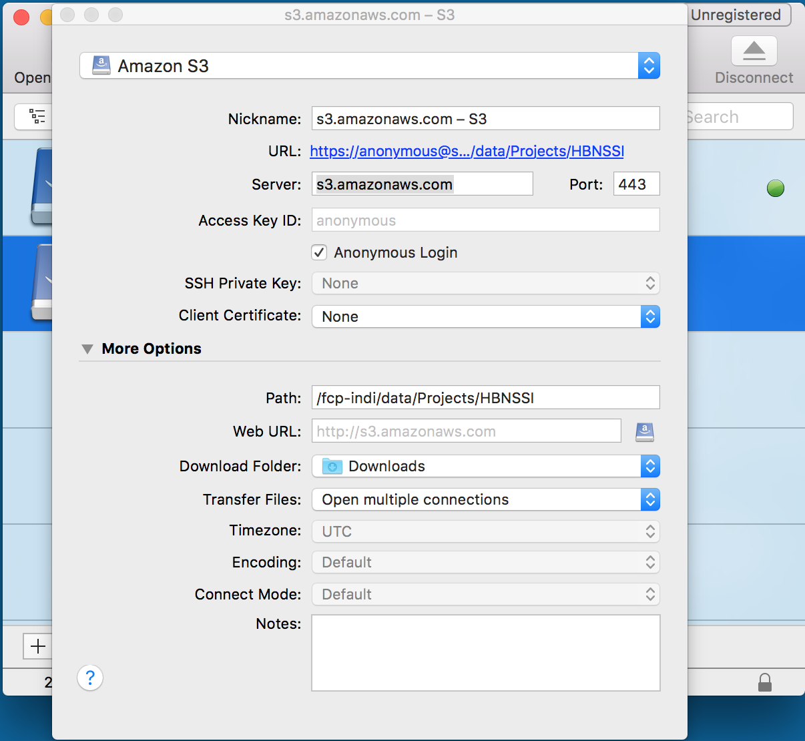

The results of the ADHD-200 Preprocessed initiative are currently available on a public Amazon S3 bucket. The data on S3 are stored as a single file per derivative for each participant, pipeline and strategy, which provides flexibility about the files that are downloaded. The data is also available on NITRC as a tar file for each derivative, pipeline and strategy.
If you use data from the ADHD-200 Preprocessed repository please cite our paper in bioRxiv, which is currently in revision for the Neuroimage special issue "Sharing the wealth: Brain Imaging Repositories in 2015".
Accessing data from the Amazon S3 bucket
Each file in the S3 bucket can only be accessed using HTTP (i.e.,no ftp or scp). You must contruct a URL for each desired file (see URL templates below) and then download it using an HTTP client such as a web browser, wget, or curl. Each file can only be accessed using its literal name- wildcards will not work. An example python script for downloading a subset of the data based on participant demographics is available here (right click and select Save Link As...). You can find instructions for using this script here.
There are also file transfer programs that can handle S3 natively and will allow you to navigate through the data using a file browser. Cyberduck is one such program that works with Windows and Mac OS X (see screenshot illustrating a configuration to connect to the ABIDE preprocessed data below). Cyberduck also has a command line version that works with Windows, Mac OS X, and Linux.
